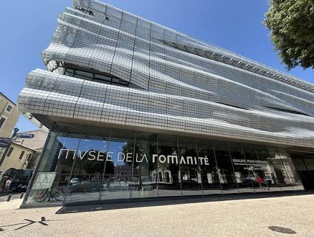

Musée de la
Romanité


⟹ Musées & découvertes ⟸
Un musée face aux arènes. Le Musée de la Romanité a ouvert le 2 juin 2018, face à l’amphithéâtre romain de Nîmes. Conçu par l’architecte Elizabeth de Portzamparc, il réunit dans un bâtiment contemporain des collections qui retracent la longue histoire de Nîmes et de son territoire, des origines au Moyen Âge.
Nemausus, ville gauloise puis romaine. Avant Rome, le site est occupé par les Volques Arécomiques, rassemblés autour d’une source sacrée dédiée au dieu Nemausus, qui a donné son nom à la ville. Intégrée à la province romaine à la fin du IIe siècle av. J.-C., sur le tracé de la voie Domitienne, Nîmes devient une colonie romaine prospère.
L’oppidum du mont Cavalier. Dès l’âge du Fer, un habitat fortifié s’installe sur les collines qui dominent la source, en particulier le mont Cavalier. Des remparts de pierre sèche et des maisons à plan rectangulaire y ont été mis au jour. Selon le géographe grec Strabon, Nemausus exerçait son autorité sur vingt-quatre bourgades de la région.

La source sacrée. Au pied du mont Cavalier, la source de la Fontaine est le cœur religieux de la ville préromaine. À l’époque romaine, un vaste sanctuaire y est aménagé, dont subsistent le temple dit de Diane et les vestiges visibles dans les jardins de la Fontaine. La Tour Magne, au sommet de la colline, intègre une tour gauloise plus ancienne.
La voie Domitienne. Vers 118 av. J.-C., le consul Cneius Domitius Ahenobarbus fait aménager la voie qui porte son nom, reliant l’Italie à l’Espagne par la côte méditerranéenne. Nîmes se trouve sur ce grand axe, ce qui favorise son intégration à la province de Narbonnaise et son essor commercial.
Le crocodile et le palmier. Nîmes devient colonie romaine sous le nom de Colonia Augusta Nemausus. Ses monnaies de bronze portent au revers un crocodile enchaîné à un palmier, souvent interprété comme une allusion à la conquête de l’Égypte par Auguste. Ce motif est devenu l’emblème de la ville, que l’on retrouve encore aujourd’hui sur son blason et dans l’espace urbain.
La cité d’Auguste. Sous le règne d’Auguste, Nîmes reçoit une vaste enceinte de plusieurs kilomètres, la Maison Carrée, le sanctuaire de la Fontaine et la Tour Magne. Au Ier siècle, les arènes, l’aqueduc qui franchit le Gardon au pont du Gard et de riches demeures urbaines complètent le visage d’une des grandes villes de la Gaule romaine.
L’enceinte et la porte d’Auguste. Vers 16-15 av. J.-C., Nîmes reçoit une enceinte d’environ six kilomètres, l’une des plus vastes de la Gaule. La porte d’Auguste, dont l’inscription rappelle ce don de l’empereur, en est le vestige le plus célèbre. Un tronçon de ce rempart, mis au jour lors du chantier du musée, est présenté dans son jardin archéologique.
Les arènes et le pont du Gard. À la fin du Ier siècle, l’amphithéâtre, capable d’accueillir plus de vingt mille spectateurs, accueille combats de gladiateurs et chasses. Au milieu du même siècle, un aqueduc long d’environ cinquante kilomètres achemine l’eau d’Uzès jusqu’à Nîmes, en franchissant le Gardon par le pont du Gard.
La vie dans la cité. Nîmes compte alors plusieurs dizaines de milliers d’habitants. Riches demeures ornées de mosaïques et de peintures, thermes, ateliers d’artisans et nécropoles le long des routes composent le paysage de la ville. Les inscriptions retrouvées font connaître magistrats, affranchis, soldats vétérans et artisans.
Des Nîmois à Rome. Plusieurs familles nîmoises accèdent aux plus hautes fonctions de l’Empire. La famille paternelle de l’empereur Antonin le Pieux, qui règne de 138 à 161, est originaire de Nemausus ; l’orateur Domitius Afer, célèbre avocat du Ier siècle, y est également né.
De l’Antiquité au Moyen Âge. Après la fin de l’Empire, la ville se resserre. Les arènes sont transformées en forteresse, puis en véritable quartier d’habitation doté de rues et d’une chapelle, avant d’être dégagées au XIXe siècle. Le musée consacre une partie de son parcours à ces transformations, qui font le lien entre la Nîmes antique et la ville médiévale.
Wisigoths et Francs. Au Ve siècle, Nîmes passe sous la domination des Wisigoths et fait partie de la Septimanie. La ville connaît ensuite une brève présence musulmane au VIIIe siècle, avant d’être intégrée au royaume franc. Les monuments antiques sont alors réutilisés comme forteresses, habitations ou carrières de pierre.
Des collections nées de l’archéologie. Les collections proviennent pour l’essentiel des découvertes faites à Nîmes et dans ses environs. Longtemps présentées dans l’ancien musée archéologique, installé dans le collège des Jésuites, elles se sont enrichies des fouilles urbaines menées depuis les années 1980, qui ont révélé mosaïques, sculptures, inscriptions et objets du quotidien.
Jean-François Séguier, pionnier de l’archéologie nîmoise. Au XVIIIe siècle, l’érudit Jean-François Séguier réunit inscriptions et antiquités et parvient à restituer la dédicace disparue de la Maison Carrée à partir des seuls trous de fixation des lettres. Ses collections et ses travaux sont à l’origine de l’intérêt scientifique de la ville pour son passé antique.
La mosaïque de Penthée. Les fouilles préventives réalisées avenue Jean-Jaurès en 2006-2007 mettent au jour deux grandes mosaïques, dont celle de Penthée, qui représente la mise à mort du roi de Thèbes par les Bacchantes. Restaurée, elle est devenue l’une des pièces majeures du musée et a pesé dans la décision de construire un nouvel équipement.
Un projet architectural ambitieux. Au début des années 2010, la ville de Nîmes lance un concours pour un nouveau musée d’archéologie face aux arènes. Le projet d’Elizabeth de Portzamparc est retenu. Le chantier, accompagné de fouilles préventives, se déroule jusqu’à l’ouverture au printemps 2018.
Un chantier archéologique. Avant la construction, des fouilles préventives explorent le terrain situé à l’intérieur de l’enceinte augustéenne. Elles mettent au jour un tronçon du rempart et une tour, désormais intégrés au jardin archéologique, et enrichissent la connaissance de ce quartier de la ville antique.
Une architecture drapée de verre. La façade ondulante, composée de milliers de carreaux de verre sérigraphiés, évoque à la fois une mosaïque et le drapé d’une toge. Le bâtiment établit un dialogue avec les arènes : il s’élève à une hauteur proche de la leur et offre des vues cadrées sur le monument antique.
Un parcours de 25 siècles. Le musée présente environ 5 000 œuvres, des périodes préromaines au Moyen Âge. Le parcours mêle pièces originales, reconstitutions et dispositifs multimédias pour faire comprendre la vie quotidienne, les croyances, l’urbanisme et l’organisation de la cité antique, puis sa transformation au Moyen Âge.
Des pièces emblématiques. Parmi les œuvres présentées figurent le guerrier de Grézan, sculpture de l’âge du Fer témoignant du monde gaulois, de nombreuses inscriptions latines, des stèles funéraires, des éléments de décor monumental et des objets de la vie quotidienne : céramiques, verreries, bijoux et outils.
Le numérique au service de l’Antiquité. Le parcours fait une large place aux dispositifs multimédias : restitutions en images de synthèse des monuments, tables tactiles, films et dispositifs immersifs permettent de replacer chaque objet dans son contexte et de visualiser la ville antique telle qu’elle pouvait apparaître.
Un jardin sur les remparts. Le jardin archéologique, aménagé le long d’un tronçon de l’enceinte augustéenne mis au jour lors du chantier, présente les strates végétales de la Nîmes préromaine, romaine et médiévale. Le toit-terrasse offre un panorama sur les arènes et les toits de la ville. En 2023, la Maison Carrée a été inscrite sur la liste du patrimoine mondial de l’UNESCO, confirmant la place de Nîmes parmi les grandes villes romaines.